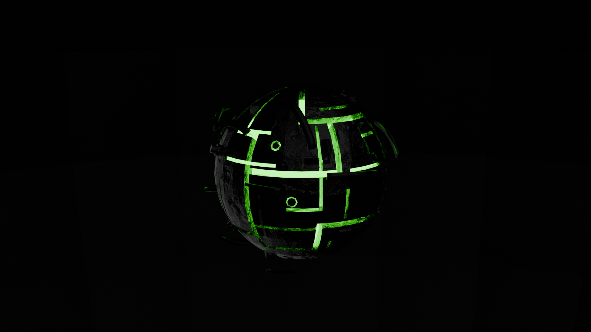
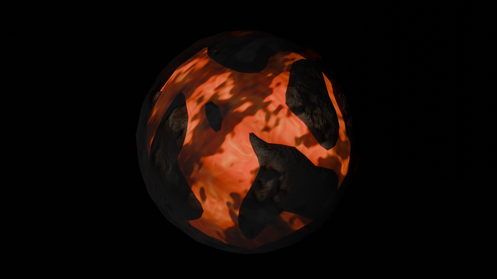
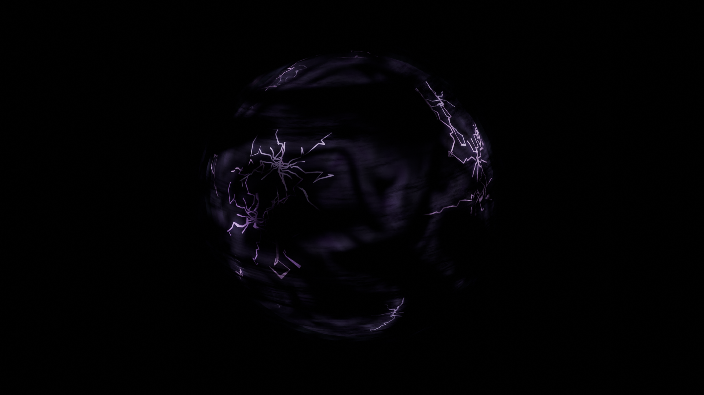
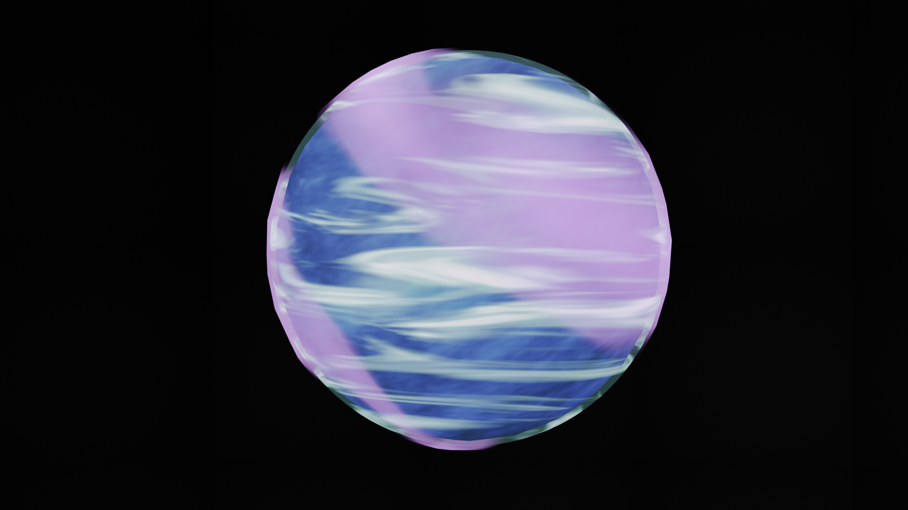
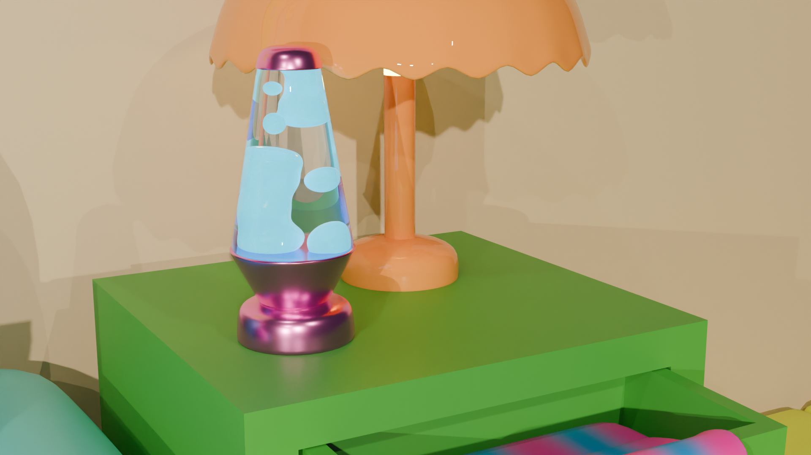
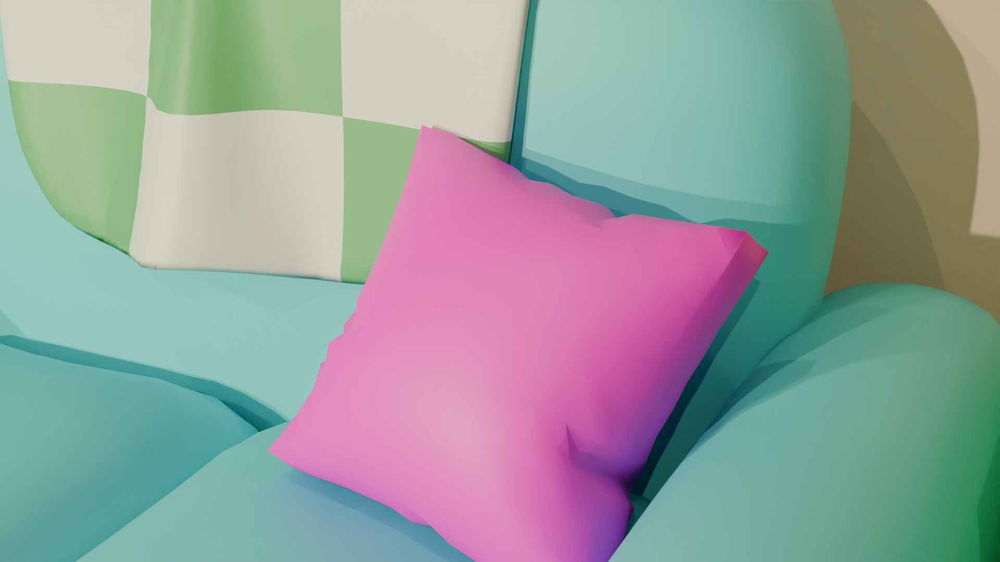
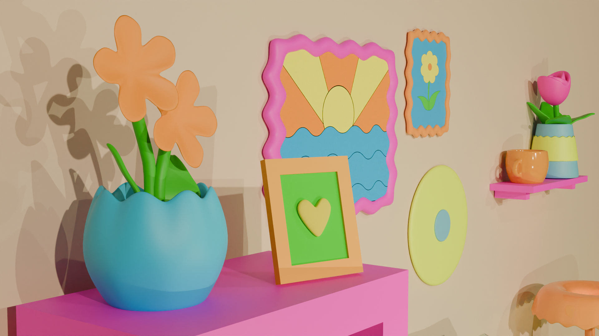
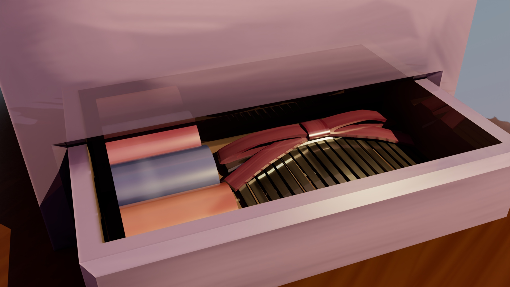
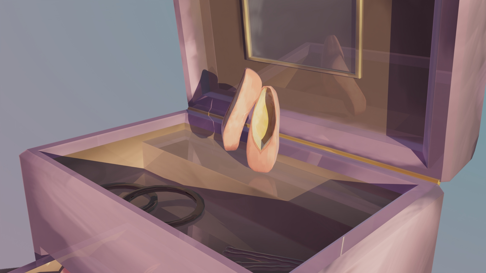
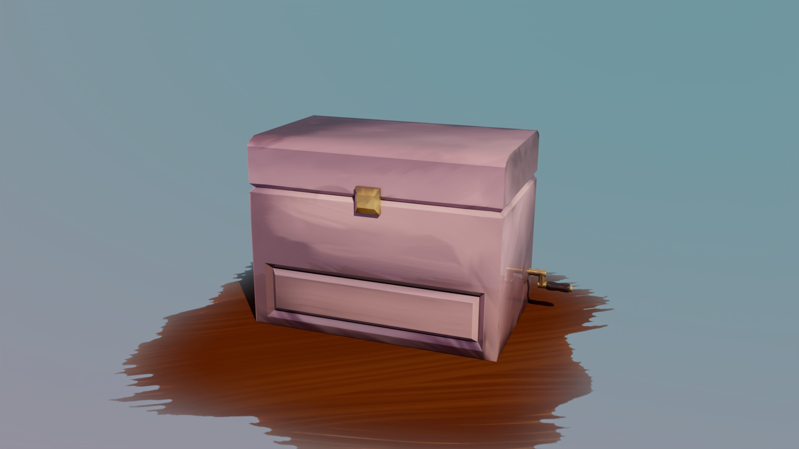

Airport Model - Blender
This model was made during an internship at TenHammers. It will eventually be used as a base map for training simulators. All models and textures were made by me in Blender and Photoshop.


A collection of planet models created and textured in Blender using shader and geometry nodes. These models were made for my multichannel audio visual work Proxima Ikos




This model was made during an internship at TenHammers. It will eventually be used as a base map for training simulators. All models and textures were made by me in Blender and Photoshop.
Neon Room is the first instalment in a series of 3D works inspired by colouring in books. Each work uses a limited colour palette and cutesy style to emulate how one may use textas on a page.




This jewellery box model was made in Maya and was inspired by my childhood aspirations to be a ballerina. The object textures are all hand painted UV maps inspired by Impressionist painters.




Currently open to interactive and multimedia roles.